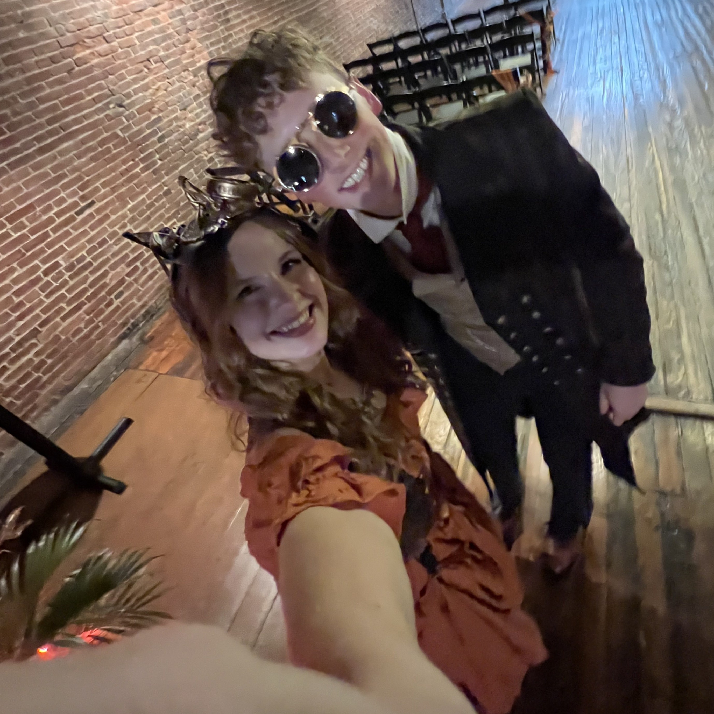

A Beautiful Wedding Day
This is AI generated for testing purposes
A Day to Remember
This past weekend, I had the privilege of attending a beautiful wedding that was nothing short of magical. From the heartfelt vows to the joyful celebration that followed, it was a day filled with love, laughter, and unforgettable moments.
The ceremony took place in a gorgeous outdoor setting, surrounded by family, friends, and breathtaking scenery. Every detail, from the decorations to the music, was thoughtfully chosen to reflect the couple's unique bond.
A Special Highlight
One of the highlights of the evening was a heartfelt toast from the bride's sister. Her words perfectly captured the essence of the couple's journey together and brought tears to many eyes, mine included!
As the evening progressed, the celebration moved to the dance floor, where everyone joined in to create lasting memories. It was a perfect day that reminded us all of the power of love and the importance of cherishing life's special moments.